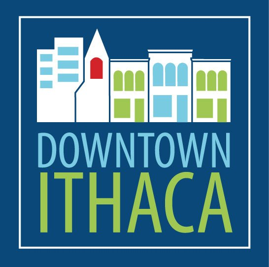

About
Background
The Ithaca Apple Harvest Festival started as a small harvest festival in 1982 to showcase the area's diverse agricultural products. With heavy involvement from Cornell and a partnership with downtown merchants including David Abdulky and Lyle McCartney, the event was strictly a farmers market. Over time, the addition of food and craft vendors, games, and other activities for children grew the event into what it is today. The event attracts an audience of over 30,000 patrons over the three days.
Sponsers

Contact Us

The Downtown Ithaca Alliance
www.downtownithaca.com
Facebook: Downtown Ithaca
Phone: 607-277-8679
Fax: 607-277-8691